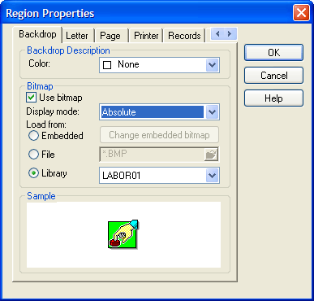
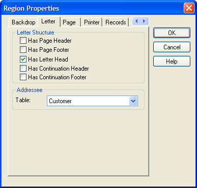
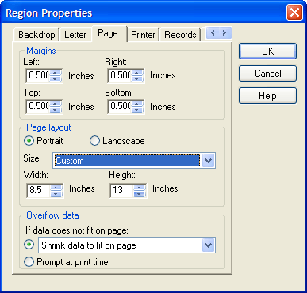
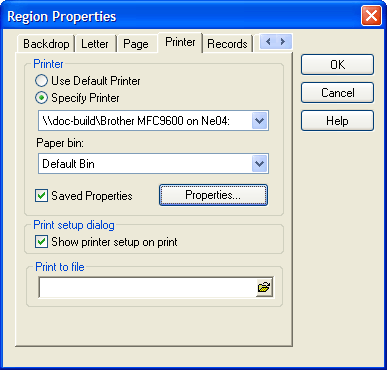
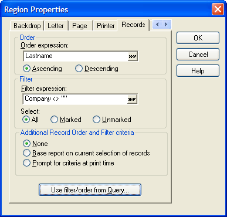
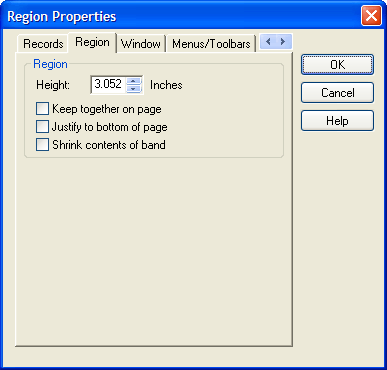
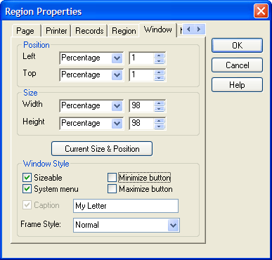
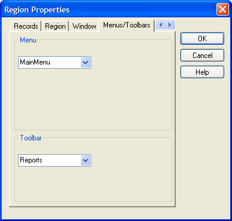

Letter Properties
|
Item |
Description |
|
Color |
The color of the form's background. :formname.fill.forecolor as C |
|
Use Bitmap |
When checked, allows a bitmap image to be used as the form's background. :formname.use_bitmap as L |
|
Display Mode |
If Bitmap is checked, sets the way the bitmap is displayed: "Absolute" (actual size), "Stretch" (fill the background, with potentially unequal scaling in horizontal and vertical dimensions), or "Best Fit" (largest size without distortion of the image). :formname.bitmap.style as C |
|
Embedded |
The name of the embedded image. |
|
File |
The name of a bitmap image file to use as a background. :formname.bitmap.filename as C |
|
Library |
The name of the library image. :formname.bitmap.library as C |

|
Item |
Description |
|
Has Page Header |
Indicates whether the letter has a page header. The page header is at the top of the page. |
|
Has Page Footer |
Indicates whether the letter has a page footer. The page footer is at the btoom of the page. |
|
Has Letter Head |
Indicates whether the letter has letter head. The letter head appears on the first page after the page header and before the letter. |
|
Has Continuation Header |
Indicates whether the letter has a continuation header. The continuation header appears on pages 2 onward after the page header and before the letter. |
|
Has Continuation Footer |
Indicates whether the letter has a continuation footer. The continuation footer appears on pages 2 onward after the letter and before the page footer. |
|
Table |
The name of the table providing the data. |

|
Item |
Description |
|
Left, Right |
Sets the left and right margins of the page. |
|
Top, Bottom |
Sets the top and bottom margins of the page. |
|
Page Layout |
Defines the orientation of the page. The options are "Portrait" and "Landscape". |
|
Size |
One of the standard paper sizes or "Custom". The selection of "Custom" enables the Width and Height fields. |
|
If data does not fit |
Indicates how to handle data that does not fit on a page. The options are: "Trim (do not print) overflow data", "Shrink data to fit on page", "Print overflow data on additional pages", and "Prompt at print time". |

|
Item |
Description |
|
Printer |
Indicates which printer to use. The options are: "Use Default Printer", and the printers listed under the Specify Printer list. |
|
Paper bin |
The paper sources defined for the selected printer. |
|
Saved Properties |
Enables the Properties button. The Properties button displays the standard Windows configuration dialog for the selected printer. |
|
Print setup dialog |
Indicates whether to display the Windows configuration dialog for the selected printer before the letter(s) print. |
|
Print to file |
Not used. |

|
Item |
Description |
|
Order Expression |
An expression that orders selected records. :formname.topparent:tables:tablename.order_expression as C See also: <OBJECT>.BASEQUERYRUN() and CURRENT_ORDER_EXPN(). |
|
Ascending / Descending |
Indicates whether to accept the order expression as written (Ascending) or to invert it (Descending). |
|
Filter Expression |
An expression that selects records from the table or set. :formname.topparent:tables:tablename.filter_expression as C See also: <OBJECT>.BASEQUERYRUN() and CURRENT_FILTER_EXPN(). |
|
Select |
Provides an additional level of filtering. The options are: "All", "Marked" (records), and "Unmarked" (records). |
|
Addition Record Order and Filter criteria |
Provides an additional level of filtering and ordering. The options are "None", "Base report on current selection of records", and "Prompt for criteria at run time". |
|
Use filter/order from Query |
The Use filter/order from Query button displays a dialog that allows the operator to select an existing query. The filter and order expressions from the query overwrite the Order Expression and Filter Expression fields. |

The region settings vary for each of the five regions defined on the Letter tab.
|
Item |
Description |
|
Height |
The height of the region in inches. |
|
Keep together on page |
Indicates whether the region must be moved to the next page if it all cannot fit on the current page. |
|
Justify to bottom of page |
Indicates whether to expand the region to fill to the bottom of the current page. |
|
Shrink contents of band |
Indicates whether it is acceptable to shrink the region to make it fit on a page. |

|
Item |
Description |
|
Left, Top |
Sets the left and top coordinates of the window. :formname.window.left as N :formname.window.top as N |
|
Width, Height |
Sets the width and height dimensions of the window. :formname.window.width as N :formname.window.height as N |
|
Mode and Value |
If the mode of any of the Position or Size values is set to "Percentage", then the value is interpreted as a percentage of the Alpha Anywhere window. In all other cases, the values are in inches. If the mode of any of the Position or Size values is set to "Percentage", then the property setting is then "Percent". If the mode is set to "Inches" or "Cm", the value of the property setting is then "Absolute". If the mode is set to "Default, the value of the property setting is "Default". In this case the size of the form is set by the size of the form in the design window. If the mode is set to "Use Form Width" or "Use Form Height", the value of the property setting is "Form". In this case the size of the form is set by the size of the design window. :formname.window.left_mode as C :formname.window.top_mode as C :formname.window.width_mode as C :formname.window.height_mode as C |
|
Sizeable |
When checked, the user can resize the form window. :formname.window.allow_resize as L |
|
System Menu |
When checked, there is a system menu in the upper left corner of the form window. :formname.window.has_system_menu as L |
|
Minimize Button |
When checked, there is a minimize button in the upper right corner of the form window. :formname.window.allow_minimize as L |
|
Maximize Button |
When checked, there is a maximize button in the upper right corner of the form window. :formname.window.allow_maximize as L |
|
Has Caption |
When checked, the caption field is enabled. :formname.window.has_caption as L |
|
Caption |
The name of the form. :formname.window_title as C |
|
Frame Style |
Sets the style of the window to "Form" (modeless), "Dialog" (modal), or "Tool" (?). :formname.window.window_style as C |

|
Item |
Description |
|
View Menu |
The standard menu to display. :formname.drop_down_menu as C |
|
View Toolbar |
The standard toolbar to display. :formname.toolbar as C |
